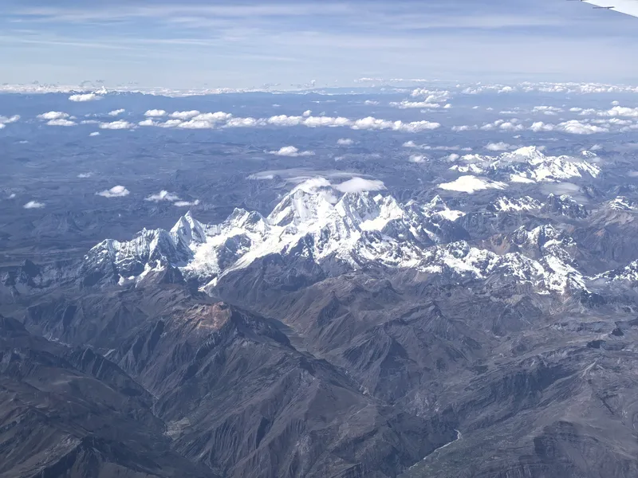
出发那天的最后一件事，是跟猫合影。它一脸不情愿，被举起来，四只爪子悬空，眼睛瞪得溜圆。我把这理解成一种祝福。
晚上九点半，浦东机场 18 号登机口。玻璃外面是黑的，玻璃里面亮得刺眼，地砖反光，把人照成两个。这趟要飞三十多个小时，巴黎转一次。这套流程早就不用想了——登机、落座、戴上颈枕、等灯暗下来。
从飞机的舷窗往下看，城市是一张摊开的电路板。灯一串一串地亮着，像有人在地面上摆了很多碎掉的星星。我一直看到那片光变成一片黑，才算真的起飞。
十几个小时以后，是巴黎。戴高乐机场的顶上全是灯，亮得像白天，Hermès 的橱窗和 Bellota Belota 的火腿并排摆着。我在那里买了一块巧克力，站在玻璃墙边吃完。人一旦开始长途飞行，时间就不是时间了，只是一段一段等出来的空。
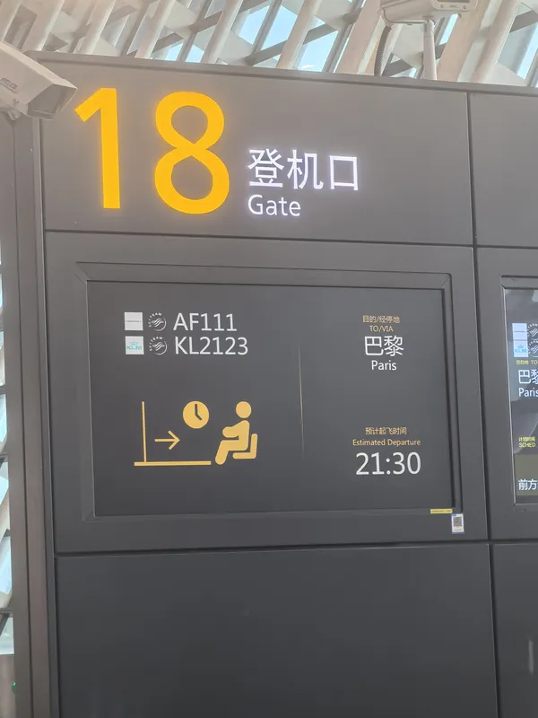
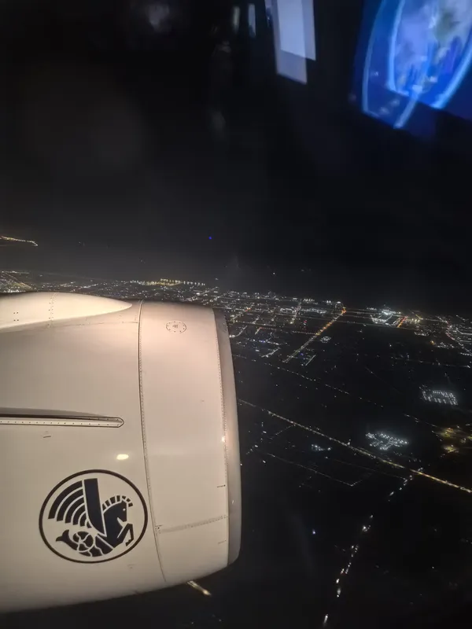
落地利马是 5 月 19 日的下午，比北京晚十三个小时。车从机场往米拉弗洛雷斯开，一个小时，窗外的颜色从灰变成灰蓝，最后是太平洋那种很硬的蓝。
利马的第一眼不是城市，是海。海岸线在崖上，公路贴着崖走，下面全是浪。
第二天早上，我们沿着这条崖线一路向南，去看海。
先到的是一个渔港。船挤在水面上，每条都旧，蓝的绿的，漆掉了一半；鹈鹕站在船头，像在等人。空气里是鱼内脏和柴油混在一起的味道——不算好闻，但你会立刻知道，这里是靠海吃饭的地方，不是给人拍照的地方。
再往前走几百米，就是海堤。一群海狮躺在上面，肥得几乎不像野生动物。它们醒着也像睡着了，偶尔抬一下头，看一眼镜头，又放下去，仿佛在说：你可以拍，但别指望我配合。
礁石黑得像烧过一样，缝里趴着红蟹，颜色艳得不像话。你不动，它也不动；你往前半步，它横着挪两寸，然后又停住。
堤上的石头缝里还站着另一种鸟。黑身红嘴红脚，一直瞪着我，白色的两撇胡子从嘴边垂下来，眼睛是红的，神情严厉，像查票的。后来查了才知道，它叫印加燕鸥。整趟旅行里，它是我见过最像"原住民"的一只鸟：不慌，不退，也不让。
渔港、海堤、鸟，这三样东西其实是一条线上的：人在这里打鱼，海狮在这里抢鱼，鸟在这里等剩的。一个上午走过来，看的其实是同一条食物链。
堤边还站着一只鸬鹚。它脖子上缠着几圈透明白线——是鱼线，绕到脑后，挂在羽毛里。它没挣扎，就那样站着，看着人。我拍了两张，就没再拍。那个上午我看的是食物链，这只鸟身上缠着的，是食物链的另一头。
午饭就在堤下的海边吃，炸海鲜堆得像小山，一桌子的柠檬和生洋葱。秘鲁人做酸橘汁腌鱼，酸得很直接，一口下去，人立刻从时差里醒过来。
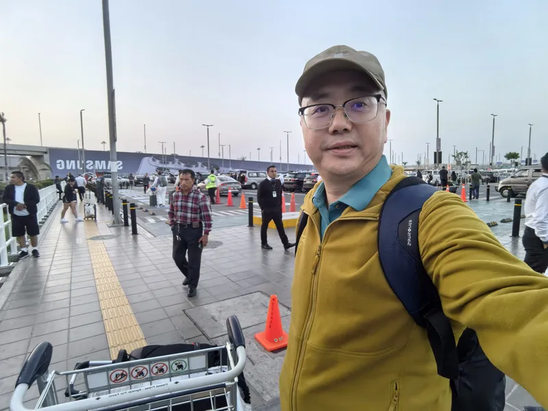
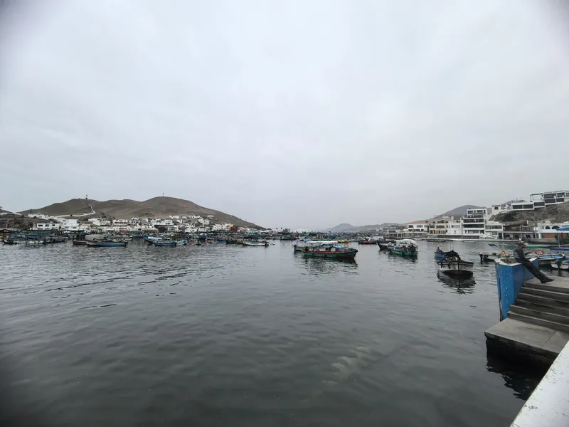
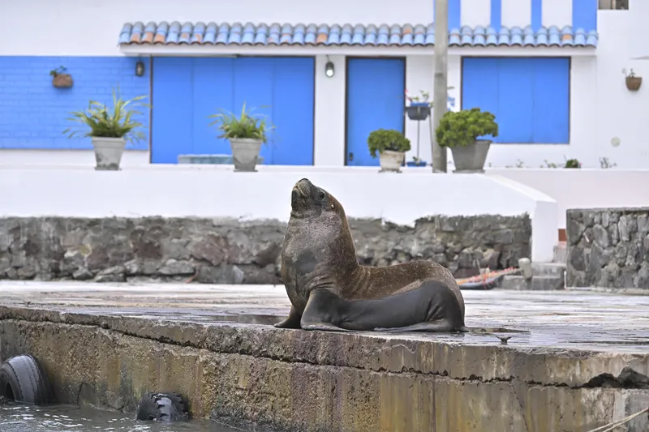
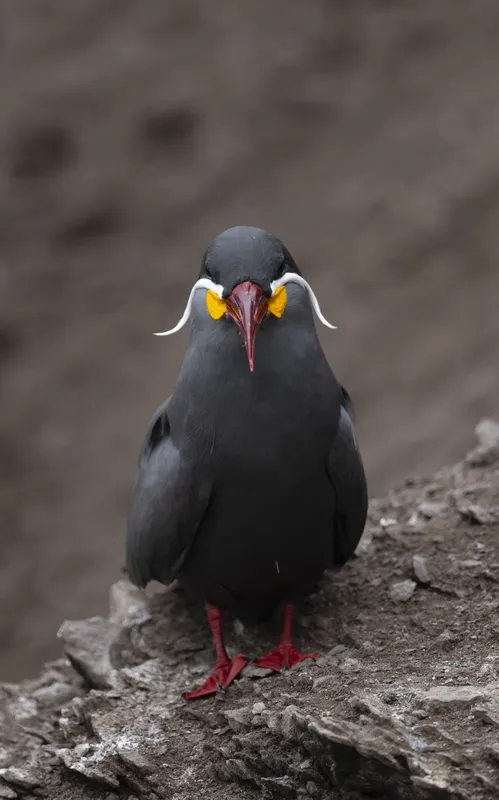
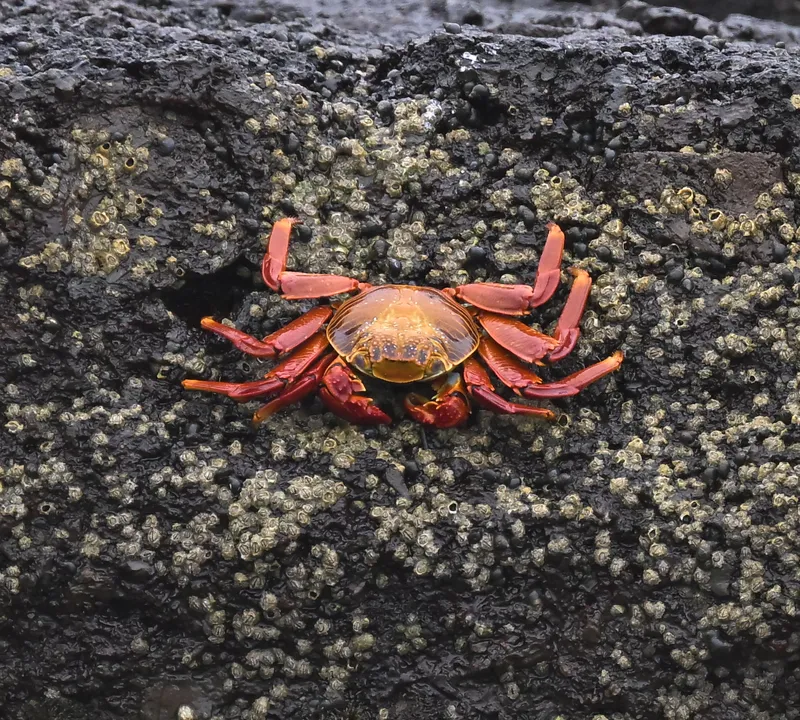
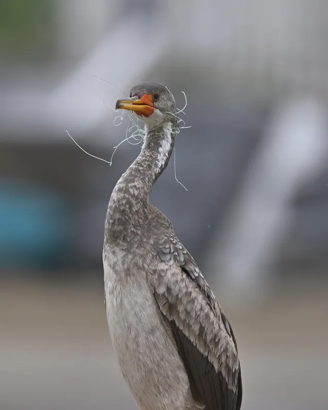
5 月 21 日中午，飞机从利马起飞，一个半小时后落在塔拉波托。
出了机场，第一件事是热。那种热是湿的，像有人拿一条温毛巾捂住了脸。第二件事是摩托车——满街都是三轮摩托，前面一个车斗，装两个人或者一堆货，突突突地从人身边擦过去，司机还会回头跟你打招呼。
街上有一家小米的店，橙色的招牌，比周围所有房子都亮。门前有人坐在台阶上修车，电线在头顶绕成一团。我站在那儿看了很久。
不是因为它奇怪，是因为它太熟了。飞了三十多个小时，落在亚马逊边上的一座小城，看见的第一块亮招牌，是一个我天天在用的牌子。人在很远的地方遇到熟悉的东西，反而更清楚地知道自己从哪儿来——那一瞬间我意识到，我确实已经离家很远了。
从这天起，空气里的东西变了——不是海浪和柴油，是树叶腐烂以后那种甜腥的味道，是蝉鸣，是永远走不出去的绿。
我原本以为拍鸟是"等"。蹲好位置，等它来，等它停稳，然后再按快门。
雨林里的蜂鸟不这样。它来得没有声音，停在花前半秒钟，翅膀快成一片虚影，你按快门的时候它已经走了。一个上午，我拍废掉的比拍成的多十倍。
最难受的不是拍不到，是"以为拍到了"。回放的时候满心欢喜地拉大，才发现焦点落在叶子上，鸟是一团虚的。那种挫败一天要来二三十次，到后来干脆懒得回放了。
后来学乖了，去那些挂着红色糖水瓶的地方。瓶子上插着一朵假花，蜂鸟排着队来喝，一秒钟一个，前后不过十几分钟。人站在旁边，只要对好焦，总能捡到几张。
但真正好看的不是喂食器边那些，是野外的。紫色的长穗花上停一只，橙色的灯心草上停一只，背景是一片化开的绿。有一张拍到了一只尾巴像圆扇一样的蜂鸟，站在横枝上，尾巴展开着，像开了屏。
也是在那几天里，我慢慢改了那个"等"的念头。等，是把时间花在自己身上；而雨林里的东西不来赴约。想拍，只能先站着，把相机举好，然后允许自己什么都等不到——真到那时候，鸟来不来，反而没那么要紧了。
雨林里还有一种东西，比鸟更让我记得：声音。天没亮的时候，无数种叫声叠在一起，一层压一层，吵得人睡不着。可到了中午，整片林子突然安静下来，安静得你以为自己聋了。
那几天住的地方门口有一块牌子，写着 WAQANKI，一个私人的保护地。牌子下面一排小图标，标注着这里有哪些动物。我站在牌子前面看了半天，觉得有点感动：一个地方把自己的物种清单，像菜单一样写在门口，这是很郑重的事。
我还拍到了一只很大的猫头鹰蝶。它停在叶子上，翅膀上的两个大眼斑，真的像一双眼睛，直直地看着你。旁边有人手里托着一只犀角金龟，那角长得夸张，像微型推土机。
有天傍晚下过雨，山头浮在云里。太阳从云缝里漏出来一条，把整片林子染成橙色的。那一刻没有鸟，没有人说话，只有很远的一声叫。
同一枝紫色的花穗，我等了二十来分钟，它回来三次，每次停不到两秒。
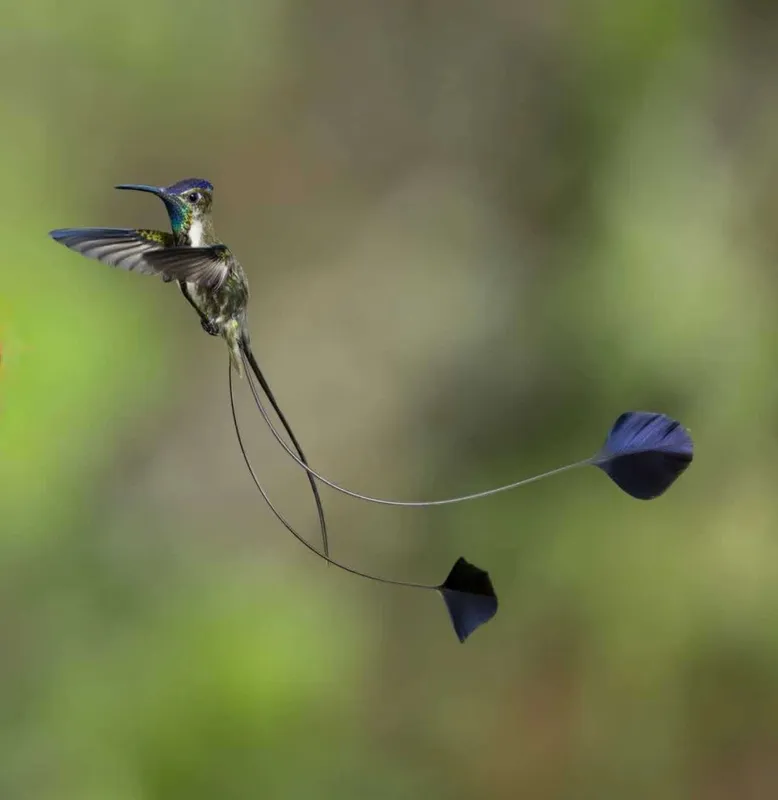
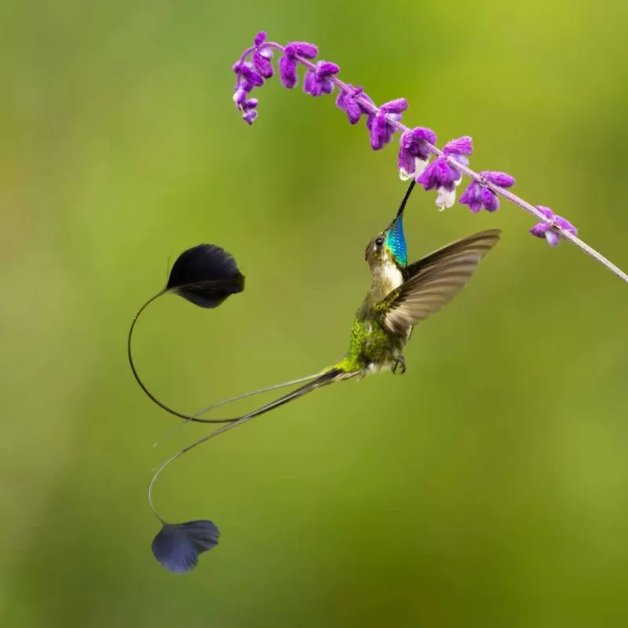
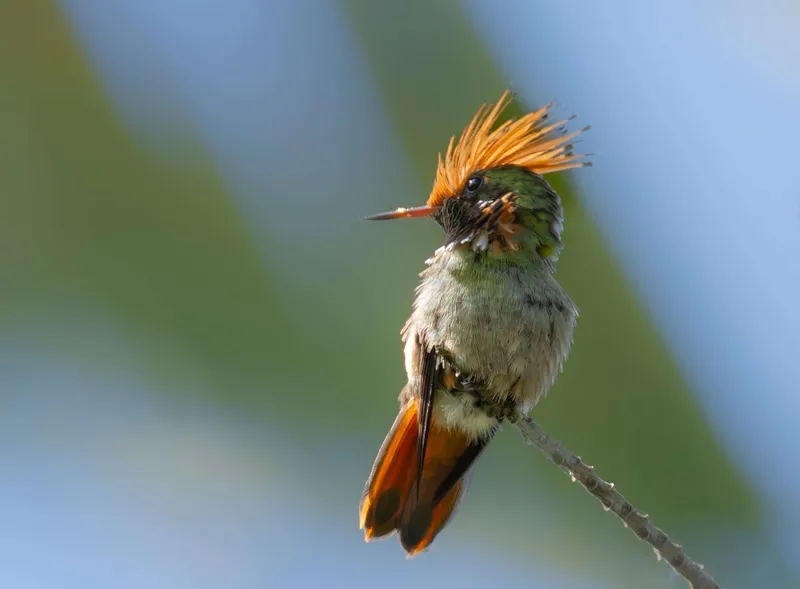
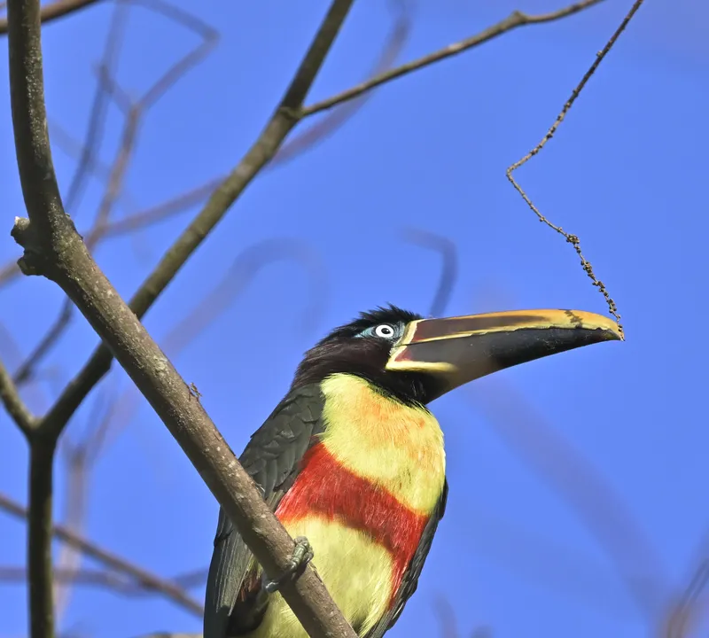
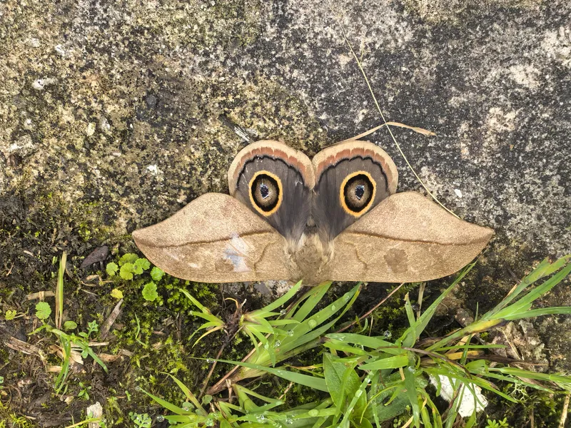
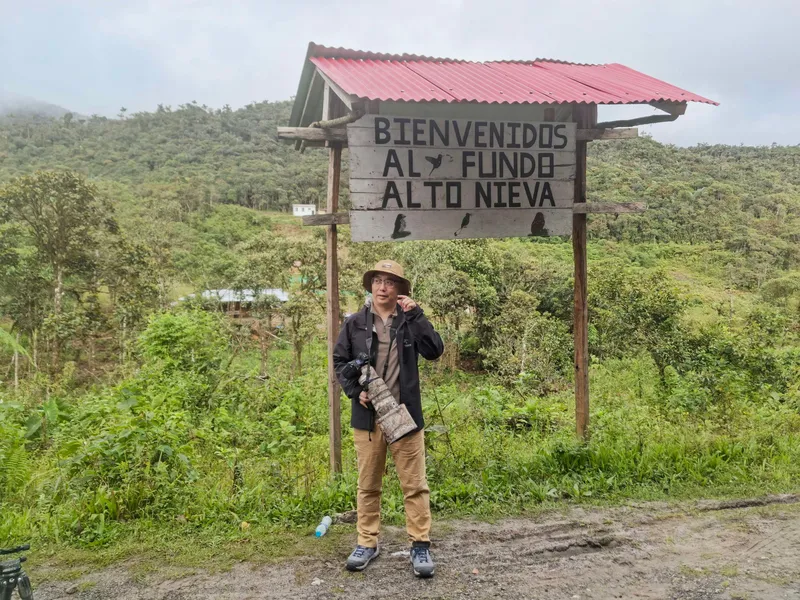
5 月 28 日，从塔拉波托飞利马转库斯克。
第二程的飞机飞得很高。从舷窗往下看，安第斯山脉整个铺开：雪线是清清楚楚的一条，山的褶皱被光照出明暗，像一张揉皱又摊开的纸。那不是风景，那是地貌本身。
库斯克在三千四百米。落地以后走路会喘，上个楼要停两次，晚上睡觉心跳得像在跑步。当地人递过来一杯古柯叶泡的茶，颜色是淡绿的，味道像青草。喝下去没什么感觉，但你会觉得，自己好像被允许留在这里了。
城市是从山上长出来的。红瓦的屋顶一片压一片，铺满整个山谷，中间夹着几条教堂的尖顶。傍晚的时候，云压得很低，光从云底下穿过来，整个城变成暖的橙色。
旅馆墙上有一幅挂毯，一整面墙那么大，图案是几何的，颜色是土黄和暗红。我看了很久，觉得印加人做的东西有一种特别的气质：不追细节，只追秩序。
那天晚上吃的是羊驼肉和土豆。秘鲁的土豆有几千种，这个说法我以前当夸张，直到看见菜单上真的写着七八种名字。
5 月 29 日，坐火车去热水镇——去马丘比丘的门户。
到热水镇只有这一条铁路，也是这条线上最有名的一趟车——车厢顶上开一排天窗，光线从上面斜下来。车厢里放着音乐，窗外是河，是蕨类，是越来越陡的山。
热水镇的样子很怪：一条街，两边是楼，楼后面直接是山。站在街中间往前看，天只剩一条缝。所有的店都在这条缝里：卖羊驼毛的，卖明信片的，卖咖啡的，墙上刷着"Machu Picchu"的字样给人拍照。
我在一家店里开了一瓶本地红酒。软木塞上烫着 INTIPALKA，底下两行小字：ICA - PERÚ——伊卡产区的酒，一路从海边运到山里来。酒不算复杂，入口很顺，配着高原的黄昏刚好。旁边一桌人在等火车，行李堆成一座小山。街上有人牵着一只白色的狗，狗穿着花布衣服，路人纷纷跟它合影。
晚上回旅馆，火车从窗外开过去，蓝色的车厢亮着灯，在黑暗里慢慢移。那一刻特别安静，安静得让人忘了第二天要去看一个世界奇迹。
5 月 30 日，清晨上山。
第一眼看见的时候，我先注意的是另一件事——它太像照片了。那个角度被人拍过无数次：左边是华纳比丘那座尖山，中间是阶梯状的遗址，草是绿的，天是蓝的，云在山腰。你站在观景台上，会有一种奇怪的错位感，好像自己走进了一张已经被看过一千遍的明信片。
但人一往下走，照片里的东西就散了。
石墙不是平的，每一块石头都被磨圆，接缝细得插不进刀片。台阶的宽度只够放半只脚，走起来要低头看。草从石缝里长出来，长得理直气壮。一只羊驼在草地上吃草，慢慢地挪，完全不理会周围端着的相机。
向导举着一张印加社会结构的图板，从印加王一路讲到最底层的劳役。一张纸讲完一个帝国，比博物馆的展板清楚。
下山的巷子里有人抱着一只白得发亮的小羊驼招揽合影。我抱了一下，它比看上去沉，而且一点也不挣扎。
我在一堵墙前站了很久。墙上开着一个窗，窗外是山。窗框是石头做的，被时间摸得发亮。那一瞬间我想：盖这座城的人，也是从这个窗口看山的。他们看到的东西，和我现在看到的，一模一样。
5 月 31 日早上又上去了一次。第二天的光线更硬，云更少，遗址的阴影更清楚。下山的时候遇到一群戴面具的人，穿着刺绣的衣服，在车站前跳舞。面具是彩色的，表情夸张，笑得有点傻气，但很好看。
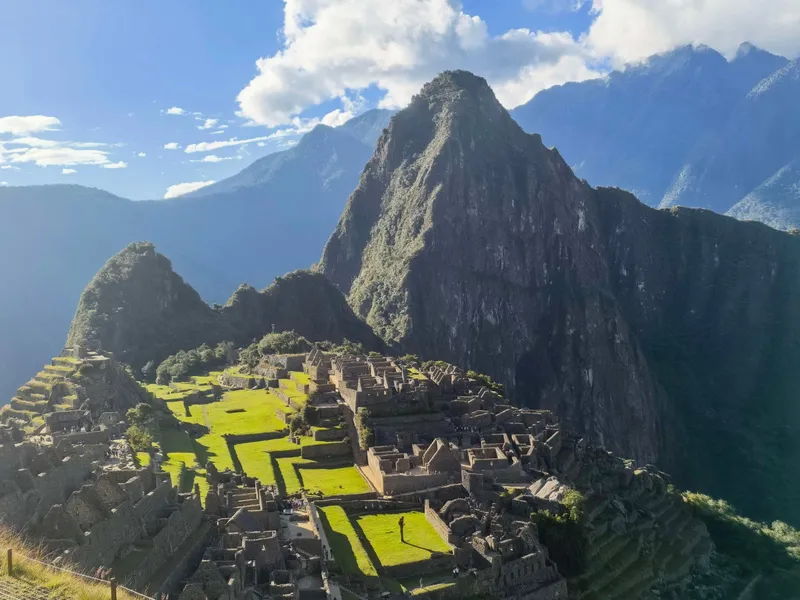
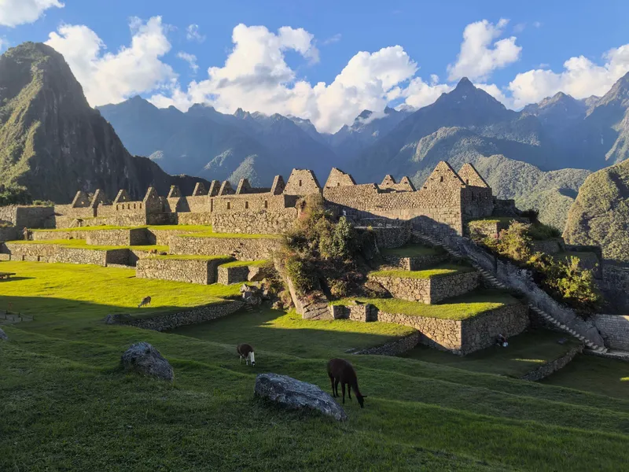
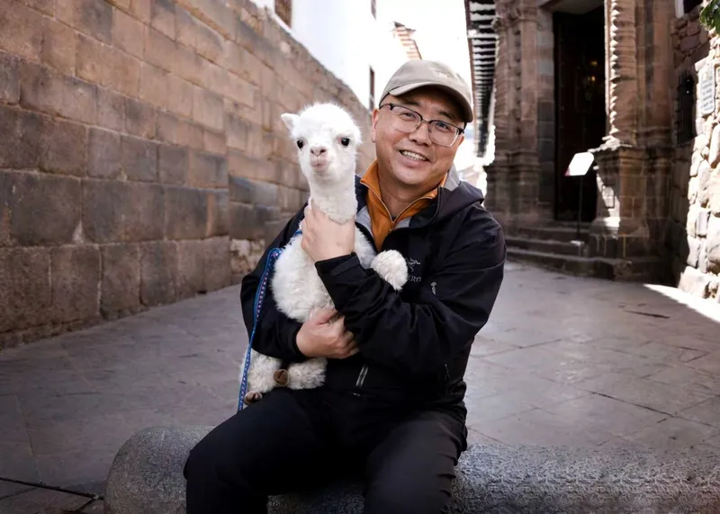
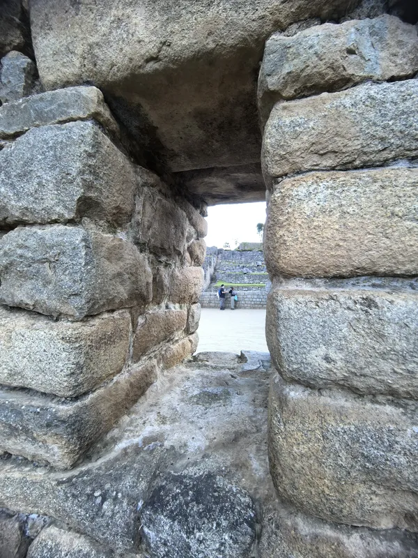
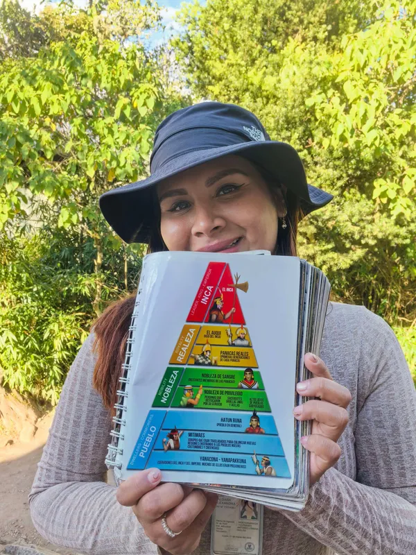
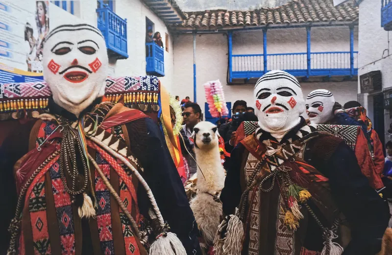
回到库斯克，是 6 月 1 日。
那天早上先去了城外的一处湿地。水面很静，几只火烈鸟站在浅水里，粉色的，脖子弯成一个问号，倒影清清楚楚。它们走得很慢，每一步都要抬一下脚，像怕踩碎了什么。
回城的路上，街边的女人穿着彩色的裙子，裙摆上全是绣花。一只白色的狗跟着她，身上也穿着小衣服。她蹲下来跟狗说话，说的我听不懂，但语气是温柔的。
中午那家餐馆开在半山，窗外就是整座城。服务员端上来一整盘烤肉、玉米和土豆，堆得像小山，够四个人吃。
吃完饭在城里转。库斯克的街都是石板铺的，两侧的房子下半截是印加人垒的石头，上半截刷成白的，门口一溜红陶花盆，花从盆里垂到地上。
有一家小馆子的墙刷成橙色，柜台上摆着一排啤酒瓶，标签一律朝外。老板娘在柜台后面擦杯子，抬头笑了一下，没说话。
下午回城，广场上正好赶上一场游行。几个人抬着一座扎满花和彩带的高塔，鼓点一响，队伍就往前走。最前面是孩子，穿着比身子大一圈的裙子和披肩，帽子上的绒球一晃一晃，走得歪歪扭扭，却认真得很。走到一处，队伍停下来跳一段，再接着走。
库斯克的广场上，教堂的石头被太阳晒得发黄。中午的光很硬，把石头的每一道刻痕都照出来。有人在广场上坐着，有人在推销画，有鸽子在脚边走来走去。
晚上又去了广场。灯亮起来，教堂变成暗红色的剪影。街上有人在卖热饮，有人在弹吉他。高原的夜，冷得很快，但广场上的人不急着回去。
回旅馆要穿过一条窄巷。路面是鹅卵石，两边的墙一半是印加人垒的巨石，一半是西班牙人刷的白墙，接缝处严丝合缝——这座城是两拨人盖在同一块地基上的。路灯把巷子照成一条发光的槽，走几步，影子就被拉长一次。
6 月 2 日，飞马尔多纳多港，然后坐船进雨林。
船开了很久。河是浑的，两岸全是树，树根泡在水里。船夫关了马达，让船顺着水漂，整片林子就只剩下鸟叫和虫鸣。那种声音不是"背景音乐"，是实物，是压在你耳朵上的东西。
第二天清晨去看金刚鹦鹉。
它们聚在一面土崖上，那面崖叫"舔盐崖"（colpa）。几百只鹦鹉挤在一起，红的、蓝的、绿的，叽叽喳喳，像一个巨大的菜市场。它们啄一口土，抬头看看四周，再啄一口。解说的人说，它们吃土是为了补充矿物质，中和果实里的毒素。
我举着相机，手是酸的，也没放下。因为它们随时会飞走，一飞就是满天。
那天下午，红绿金刚鹦鹉贴着河谷飞过去，红和绿在蓝天里划出两道线。它们飞得很低，翅膀扇动的声音比叫声还大。
河边的泥地上趴着三只水豚，中间那只正张着嘴打哈欠，牙齿露在外面。它们对我毫无兴趣，连头都没抬。
雨林里还有一种体验，是别人很少提到的：热。那种热让人一天要冲三次澡，洗完出来五分钟又是一身汗。相机镜头会起雾，从空调房拿到外面，要等二十分钟才能拍。
雨林送我的纪念品是一胳膊的包——左边二十七个，右边十九个。
但傍晚的时候，一切都值了。天边的云烧起来，从橙到红到紫，整片雨林变成黑色的剪影。我站在树冠塔上，看着太阳掉下去，觉得这可能是二十天里最好的十分钟。
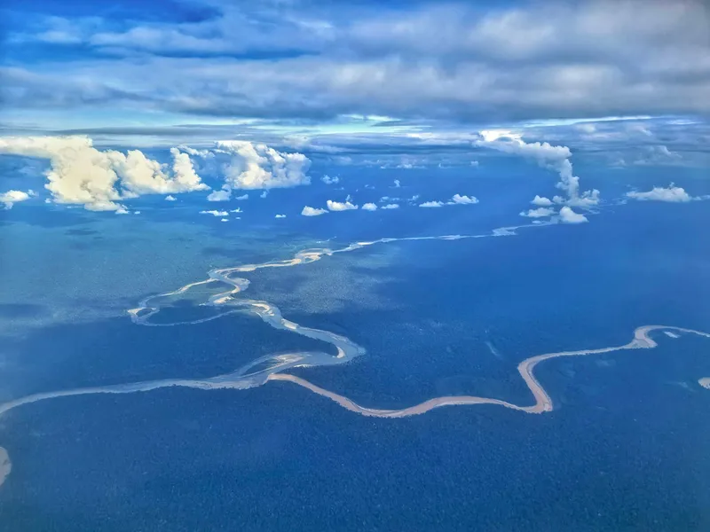
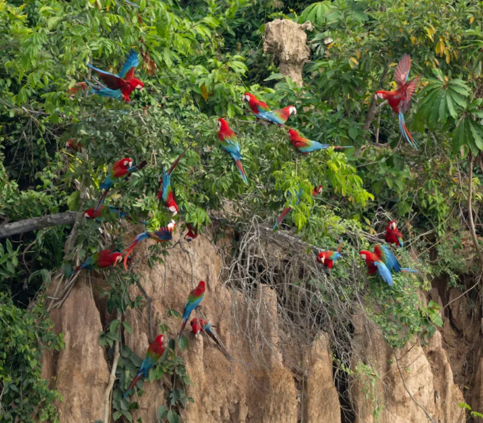
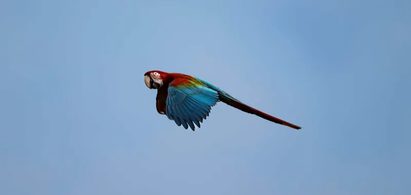
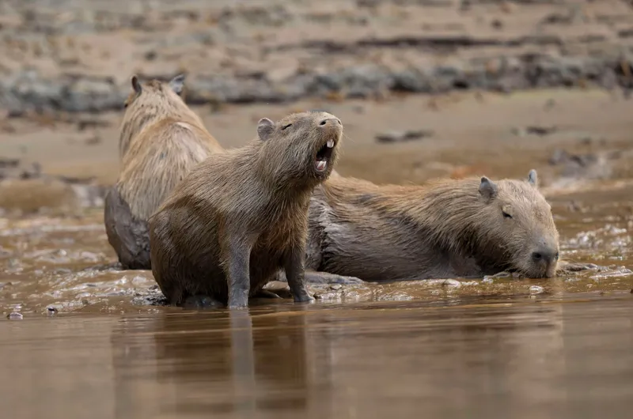
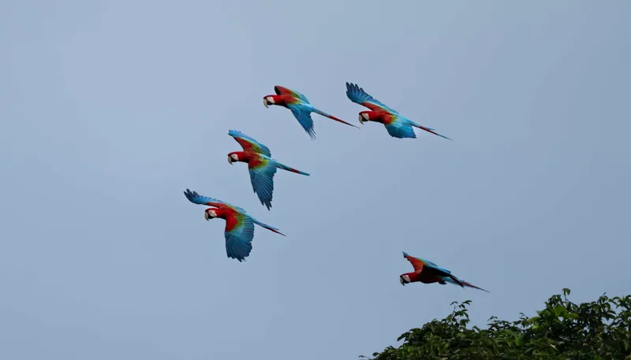
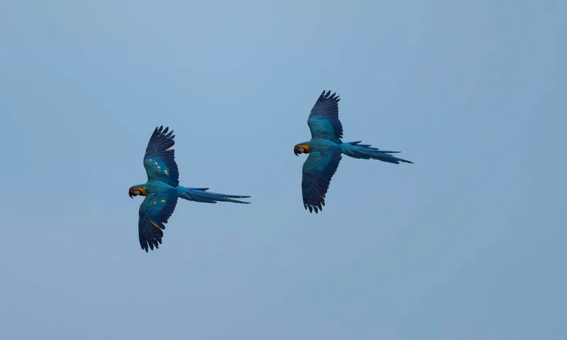
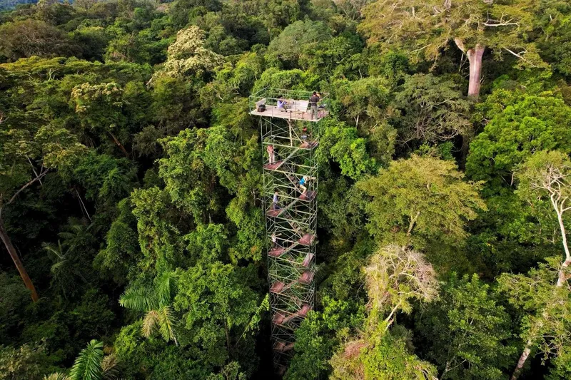
6 月 5 日，又回到利马。
这一次去的是老城。
广场上执勤的警员很愿意合影。他们穿着防暴背心，身前立着印有 POLICIA 的透明盾牌，笑起来却一点也不凶。
武器广场四四方方，四周是黄色的殖民建筑，中间一个喷泉，棕榈树高得不像话。教堂的门开着，里面很暗，光从高处的窗子照进来，落在一排排长椅上。
然后去了一个靠海的街区。墙上有大片的壁画，颜色艳得不像话，有人在画前面坐着聊天。街道的尽头是海，海是灰蓝色的，风很大。
在人家的壁画前面坐了一会儿，墙上的颜色比街上的太阳还亮。
有一户人家的院墙外面，垂下来一整片紫红色的花，把整条巷子盖住了。我站在那儿看了很久，觉得南美的颜色有一种不讲理的浓——黄就是黄，紫就是紫，红就是红，没有中间地带。
那天傍晚在海岸边，我拍了最后一张自己。风把头发吹起来，身后是太平洋。我想着，二十天，就这样过完了。
6 月 5 日夜里起飞，6 月 6 日到上海。
飞机上我又看了一眼舷窗。这次没有城市的电路板，只有一片粉色和紫色的光，从云层上面升起来。不知道是日出还是日落，反正地球在转，光就在那里。
回家那天晚上，我睡到半夜醒过来，看表，是利马的下午。爬起来处理了几封邮件，天就亮了——身体还停在另一个半球的钟点上，怎么拨都拨不回来。
过了差不多一周，作息才慢慢对上。可每次翻到硬盘里那些照片，那二十天又会重新过一遍：登机口的灯、海堤上的海狮、雨林里的第一声叫、石头窗框里的山。
地球把它们放得那么远，绕了一圈，它们又都回到一块硬盘里，和这里只隔十三个小时。